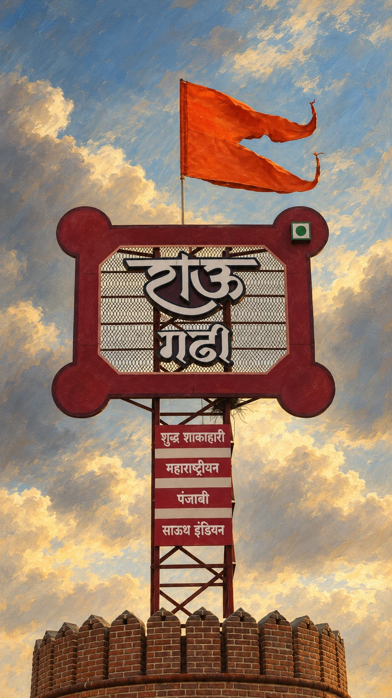

SAROLA, MAHARASHTRA — PURE VEGETARIAN
थाट पेशवाईचा.मान पाहुण्यांचा.
खाशा पाहुण्यांसाठी सजलेली मराठमोळी पंगत.
अस्सल चव. शाही सरबराई.A Marathi feast. A welcome worthy of an honoured guest.
राऊ गढी · परंपरेची चव, आपुलकीचा अनुभव.
THE SPIRIT THAT STARTED IT ALL
स्वराज्याची प्रेरणा.
आपुलकीची नवी कहाणी.
From the Maratha fort tradition to a new beginning in Sarola.

The Maratha story was written in forts.
From the Sahyadri hills to the Konkan coast, the forts associated with Chhatrapati Shivaji Maharaj speak of vision, resourcefulness and resolve. Their ramparts, bastions and gateways are part of the heritage that inspires Rau Garhi.
Explore the Maratha fort heritageTo bring that inspiration into a place of welcome, founders Sushama Uddhavrao Shinde and Vasundhara Yogesh Deshmukh imagined a new Gadhi in Sarola. A place to gather, share a meal and feel closer to Maharashtra.
First, a dream. Then, three years of work.
Over three years, visionaries and local craftsmen shaped Rau Garhi into a ground-level stone fort inspired by traditional Tatbandi ramparts and Buruj bastions. Arches, substantial wooden doorways, and stone walkways bring the language of the Gadhi into the present.
Then the gates opened.
In July 2026, the gates opened on the Pune–Bengaluru Highway at Sarola Gaon. Behind them, a pure vegetarian kitchen began celebrating rural Maharashtrian recipes and the warmth of a shared table.
“The inspiration is Maratha.
The welcome is for everyone.”
THE RAU GARHI STORY
STEP THROUGH THE GATES
आपली गढी. आपुलकीची पंगत
Through the gates, life slows down.
Now it’s your turn to enter. Past the stone ramparts, wooden doorways open onto courtyards and the warmth of a waiting table. Take a moment, settle in, and let the journey from the highway become an afternoon together.
Now, take your place at the table ↓Pure vegetarian · Rooted in Maharashtra · Served with आपुलकी.
THE GADHI IN MOTION
गढी बोलते, तुम्ही फक्त ऐका.
A closer look at Rau Garhi, through three short films.
Swipe to explore
THE RAU GARHI ALBUM
एका गढीत, कितीतरी गोष्टी.
After the meal, linger a little. Follow the wooden balconies, look up at the tiled roofs, and take a walk through the Gadhi. Every corner adds to the story.
YOUR CHAPTER STARTS HERE
तुमची माणसं.
आपली पंगत.
You’ve met the Gadhi. Now bring the people who make a meal memorable. Tell us when you’re coming; we’ll help you plan your own afternoon at Rau Garhi.
+91 92723 03682 ↗Requests go directly to our team on WhatsApp.
Your reservation is confirmed when we reply.
THE ROAD LEADS TO RAU GARHI
Every story starts with a journey. Yours leads to Sarola.
Sarola Gaon
Pune–Bengaluru Highway
Maharashtra, India